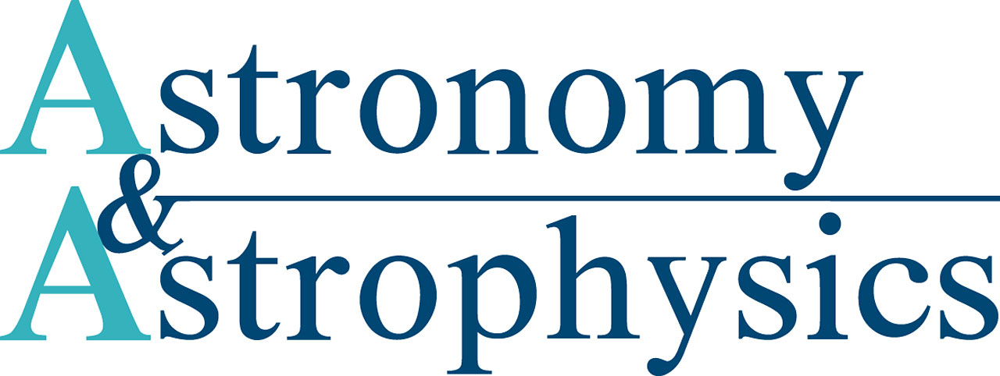
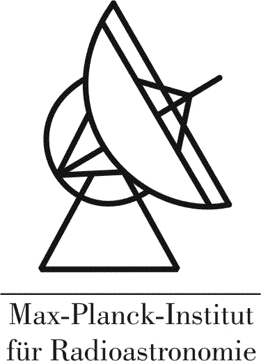

Publications:
2022
Discovery of non-metastable ammonia masers in Sagittarius B2 Yan, Y. T. ; Henkel, C. ; Menten, K. M. ; Gong, Y. ; Nguyen, H. ; Ott, J. ; Ginsburg, A. ; Wilson, T. L. ; Brunthaler, A. ; Belloche, A. ; Zhang, J. S. ; Budaiev, N. ; Jeff, D.; A&A, accepted
A Global View on Star Formation: The GLOSTAR Galactic Plane Survey V. 6.7 GHz Methanol Maser Catalogue Nguyen, H. ; Rugel, M. R. ; Murugeshan, C. ; Menten, K. M. ; Brunthaler, A. ; Urquhart, J. S. ; Dokara, R. ; Dzib, S. A. ; Gong, Y.; Khan, S. ; Medina, S-N. X. ; Ortiz-Leon, G. N. ; Reich, W. ; Wyrowski, F. ; Yang, A. Y. ; Beuther, H. ; Cotton, W. D. ; Pandian, J. D.; 2022, A&A, accepted
Water Masers as an Early Tracer of Star Formation Ladeyschikov, Dmitry A.; Gong, Yan; Sobolev, Andrey M.; Menten, Karl M.; Urquhart, James S.; Breen, Shari L.; Shakhvorostova, Nadezhda N.; Bayandina, Olga S.; Tsivilev, Alexander P.; 2022, ApJS, 261, 14
Vibrationally excited HCN transitions in circumstellar envelopes of carbon-rich AGB stars Jeste, Manali ; Gong, Yan; Wong, Ka Tat; Menten, Karl M. ; Kamiński, Tomasz ; Wyrowski, Friedrich; 2022, A&A, accepted
HI-H2 transition: exploring the role of the magnetic field Skalidis, R.; Tassis, K.; Panopoulou, G. V. ; Pineda, J. L. ; Gong, Y. ; Mandarakas, N.; Blinov, D.; Kiehlmann, S.; Kypriotakis, J. A.; 2022, A&A, accepted
And then they were two: detection of non-thermal radio emission from the bow shocks of two runaway stars Moutzouri, M. ; Mackey, J. ; Carrasco González, C. ; Gong, Y. ; Brose, R. ; Zargaryan, D. ; Toalá, J. A. ; Menten, K. M. ; Gvaramadze, V. V. ; Rugel, M. R.; 2022, A&A, 663, A80
Widespread subsonic turbulence in Ophiuchus North 1 Gong, Y. ; Liu, S.; Wang, J.-Z.; Zhu, W.-S.; Li, G.-X.; Yang, W.-J.; Sun, J.-X.; 2022, A&A, 663, A82
Discovery of ammonia (9,6) masers in two high-mass star-forming regions Yan, Y. T. ; Henkel, C. ; Menten, K. M. ; Gong, Y. ; Ott, J. ; Wilson, T. L. ; Wootten, A. ; Brunthaler, A. ; Zhang, J. S. ; Chen, J. L. ; Yang, K.; 2022, A&A, 659, A5
Redshifted methanol absorption tracing infall motions of high-mass star formation regions Yang, W. J.; Menten, K. M. ; Yang, A. Y.; Wyrowski, F. ; Gong, Y. ; Ellingsen, S. P. ; Henkel, C. ; Chen, X. ; Xu, Y. ; 2022, A&A, 658, A192
2021
Kinetic temperature of massive star-forming molecular clumps measured with formaldehyde. IV. The ALMA view of N113 and N159W in the LMC Tang, X. D. ; Henkel, C. ; Menten, K. M. ; Gong, Y. ; Chen, C. -H. R. ; Li, D. L. ; Lee, M. -Y. ; Mangum, J. G. ; Ao, Y. P. ; Mühle, S. ; Aalto, S. ; García-Burillo, S. ; Martín, S. ; Viti, S. ; Muller, S. ; Costagliola, F. ; Asiri, H. ; Levshakov, S. A. ; Spaans, M. ; Ott, J. Impellizzeri, C. M. V. ; Fukui, Y. ; He, Y. X. ; Esimbek, J. ; Zhou, J. J. ; Zheng, X. W. ; Zhao, X. ; Li, J. S.; 2021, A&A, 655, 12
[ 
  ]
A global view on star formation: The GLOSTAR Galactic plane survey IV. Radio continuum detections of young stellar objects in the Galactic Centre region
Nguyen, H.; Rugel, M. R.; Menten, K. M.; Brunthaler, A.; Dzib, S. A.; Yang, A. Y.; Kauffmann, J.; Pillai, T.; Nandakumar, G.; Schultheis, M.; Urquhart, J. S.; Dokara, R.; Gong, Y.; Medina, S-N. X.; Ortiz-León, G. N.; Reich, W.; Wyrowski, F.; Beuther, H.; Cotton, W. D.; Csengeri, T.; Pandian, J. D.; Roy, N.; 2021, A&A, 651, A88
]
A global view on star formation: The GLOSTAR Galactic plane survey IV. Radio continuum detections of young stellar objects in the Galactic Centre region
Nguyen, H.; Rugel, M. R.; Menten, K. M.; Brunthaler, A.; Dzib, S. A.; Yang, A. Y.; Kauffmann, J.; Pillai, T.; Nandakumar, G.; Schultheis, M.; Urquhart, J. S.; Dokara, R.; Gong, Y.; Medina, S-N. X.; Ortiz-León, G. N.; Reich, W.; Wyrowski, F.; Beuther, H.; Cotton, W. D.; Csengeri, T.; Pandian, J. D.; Roy, N.; 2021, A&A, 651, A88
[  ]
A global view on star formation: The GLOSTAR Galactic plane survey - III. 6.7 GHz methanol maser survey in Cygnus X
Ortiz-León, Gisela N.; Menten, Karl M.; Brunthaler, Andreas; Csengeri, Timea; Urquhart, James S.; Wyrowski, Friedrich; Gong, Yan; Rugel, Michael R.; Dzib, Sergio A.; Yang, Aiyuan; Nguyen, Hans; Cotton, William D.; Medina, Sac Nicte X.; Dokara, Rohit; Koenig, Carsten; Beuther, Henrik; Pandian, Jagadheep D.; Reich, Wolfgang; Roy, Nirupam; 2021, A&A, 651, A87
]
A global view on star formation: The GLOSTAR Galactic plane survey - III. 6.7 GHz methanol maser survey in Cygnus X
Ortiz-León, Gisela N.; Menten, Karl M.; Brunthaler, Andreas; Csengeri, Timea; Urquhart, James S.; Wyrowski, Friedrich; Gong, Yan; Rugel, Michael R.; Dzib, Sergio A.; Yang, Aiyuan; Nguyen, Hans; Cotton, William D.; Medina, Sac Nicte X.; Dokara, Rohit; Koenig, Carsten; Beuther, Henrik; Pandian, Jagadheep D.; Reich, Wolfgang; Roy, Nirupam; 2021, A&A, 651, A87
[  ]
A global view on star formation: The GLOSTAR Galactic plane survey - II. Supernova remnants in the first quadrant of the Milky Way
Dokara, Rohit; Brunthaler, A.; Menten, K. M.; Dzib, S. A.; Reich, W.; Cotton, W. D.; Anderson, L. D.; Chen, C. -H. R.; Gong, Y.; Medina, S. -N. X. ; Ortiz-León, G. N.; Rugel, M.; Urquhart, J. S.; Wyrowski, F.; Yang, A. Y.; Beuther, H.; Billington, S. J.; Csengeri, T.; Carrasco-González, C.; Roy, N.; 2021, A&A, 651, A86
]
A global view on star formation: The GLOSTAR Galactic plane survey - II. Supernova remnants in the first quadrant of the Milky Way
Dokara, Rohit; Brunthaler, A.; Menten, K. M.; Dzib, S. A.; Reich, W.; Cotton, W. D.; Anderson, L. D.; Chen, C. -H. R.; Gong, Y.; Medina, S. -N. X. ; Ortiz-León, G. N.; Rugel, M.; Urquhart, J. S.; Wyrowski, F.; Yang, A. Y.; Beuther, H.; Billington, S. J.; Csengeri, T.; Carrasco-González, C.; Roy, N.; 2021, A&A, 651, A86
[  ]
A global view on star formation: The GLOSTAR Galactic Plane Survey - I. Overview and first results for the Galactic longitude range 28° < l < 36°
Brunthaler, A.; Menten, K. M.; Dzib, S. A.; Cotton, W. D.; Wyrowski, F.; Dokara, R.; Gong, Y.; Medina, S-N. X.; Müller, P.; Nguyen, H.; Ortiz-León, G. N.; Reich, W.; Rugel, M. R.; Urquhart, J. S.; Winkel, B.; Yang, A. Y.; Beuther, H.; Billington, S.; Carrasco-Gonzales, C.; Csengeri, T.; Murugeshan, C.; Pandian, J. D.; Roy, N.; 2021, A&A, 651, A85
]
A global view on star formation: The GLOSTAR Galactic Plane Survey - I. Overview and first results for the Galactic longitude range 28° < l < 36°
Brunthaler, A.; Menten, K. M.; Dzib, S. A.; Cotton, W. D.; Wyrowski, F.; Dokara, R.; Gong, Y.; Medina, S-N. X.; Müller, P.; Nguyen, H.; Ortiz-León, G. N.; Reich, W.; Rugel, M. R.; Urquhart, J. S.; Winkel, B.; Yang, A. Y.; Beuther, H.; Billington, S.; Carrasco-Gonzales, C.; Csengeri, T.; Murugeshan, C.; Pandian, J. D.; Roy, N.; 2021, A&A, 651, A85
Discovery of 22 GHz Water Masers in the Serpens South Region Ortiz-León, Gisela N.; Plunkett, Adele; Loinard, Laurent; Dzib, Sergio A.; Rodríguez-Garza, Carolina B.; Pillai, Thushara; Gong, Yan; Brunthaler, Andreas; 2021, AJ 162, 68
Dense gas in local galaxies revealed by multiple tracers Li, Fei; Wang, Junzhi; Gao, Feng; Liu, Shu; Zhang, Zhi-Yu; Li, Shanghuo; Gong, Y.; Li, Juan; Shi, Yong; 2021, MNRAS, 503, 4508
[ ] Hunting for the elusive methylene radical (fits) Jacob, A. M.; Menten, K. M.; Gong, Y.; Bergman, P.; Tiwari, M.; Bruenken, S.; Olofsson, A.O.H.; 2021, A&A, 647, A42
Physical and chemical structure of the Serpens filament: fast formation and gravity-driven accretion (fits-cube, dynamic e-poster, animation) Gong, Y.; Belloche, A.; Du, F. J.; Menten, K. M.; Henkel, C.; Li, G. X.; Wyrowski, F.; Mao, R. Q.; 2021, A&A, 646, A170
2020
Evidence for dense gas heated by the explosion in Orion KL Li, Dalei; Tang, Xindi; Henkel, Christian; Menten, Karl M.; Wyrowski, Friedrich; Gong, Yan,; Wu, Gang; He, Yuxin; Esimbek, Jarken; Zhou, Jianjun, 2020, ApJ, 901, 62
New maser species tracing spiral-arm accretion flows in a high-mass young stellar object Chen, Xi; Sobolev, Andrej M.; Ren, Zhi-Yuan; Parfenov, Sergey; Breen, Shari L.; Ellingsen, Simon P.; Shen, Zhi-Qiang; Li, Bin; MacLeod, Gordon C.; Baan, Willem; Brogan, Crystal; Hirota, Tomoya; Hunter, Todd R.; Linz, Hendrik; Menten, Karl; Sugiyama, Koichiro; Stecklum, Bringfried; Gong, Yan; Zheng, Xingwu, 2020, NatAs, 4, 1170
Interstellar glycolamide: A comprehensive rotational study and an astronomical search in Sgr B2(N) Sanz-Novo, M.; Belloche, A.; Alonso, J. L.; Kolesnikova, L.; Garrod, R. T.; Mata, S.; Müller, H. S. P.; Menten, K. M.; Gong, Y., 2020, A&A, 639, A135
Local molecular gas toward the Aquila Rift region Su, Y.; Yang, J.; Yan, Q.-Z.; Gong, Y.; Chen, Z.-W.; Zhang, S.-B.; Sun, Y.; Zhang, M.-M.; Chen, X.-P.; Zhou, X.; Wang, M.; Wang, H.-C.; Xu, Y.; Jiang, Z.-B., 2020, ApJ, 893, 91
36 GHz methanol lines from nearby galaxies: maser or quasi-thermal emission? Humire, P.; Henkel, C.; Gong, Y.; Leurini, S.; Mauersberger, R.; Levshakov, S. A.; Winkel, B.; Tarchi, A.; Castangia, P.; Malawi, A.; Asiri, H.; Ellingsen, S. P.; McCarthy, T. P.; Chen, X.; Tang, X., 2020, A&A, 633, A106
2019
Searching for further evidence for cloud-cloud collisions in L1188 (pdf-file, fits-cube) Gong, Y.; Tang, X.D.; Henkel, C.; Menten, K.M.; Mao, R.Q.; Wang, Y.; Lee, M.-Y.; Zhu, W.S.; Lin, Y.; Zhang, S.B.; Chen, X.P.; Yang, W.J., 2019, A&A, 632, A115
ALMA view of the 12C/13C isotopic ratio in starburst galaxies Tang, X. D.; Henkel, C.; Menten, K. M.; Gong, Y.; Martin, S.; Muhle, S.; Aalto, S.; Muller, S.; Garcia-Burillo, S.; Levshakov, S.; Aladro, R.; Spaans, M.; Viti, S.; Asiri, H. M.; Ao, Y. P.; Zhang, J. S.; Zheng, X. W.; Esimbek, J.; Zhou, J. J., 2019, A&A, 629, A6
GLOSTAR -- Radio Source Catalog I: 28°＜l＜36° and |b|＜1° Medina, S. N. X.; Urquhart, J. S.; Dzib, S. A.; Brunthaler, A.; Cotton, B.; Menten, K. M.; Wyrowski, F.; Beuther, H.; Billington, S. J.; Carrasco-Gonzalez, C.; Csengeri, T.; Gong, Yan; Hofner, P.; Nguyen, H.; Ortiz-León, G. N.; Ott, J.; Pandian, J. D.; Roy, N.; Sarkar, E.; Wang, Y. Winkel, B., 2019, A&A, 627, A175
The Milky Way Imaging Scroll Painting (MWISP): Project Details and Initial Results from the Galactic Longitude of 25.8deg to 49.7deg Su, Yang; Yang, Ji; Zhang, Shaobo; Gong, Yan; Wang, Hongchi; Zhou, Xin; Wang, Min; Chen, Zhiwei; Sun, Yan; Chen, Xuepeng; Xu, Ye; Jiang, Zhibo, 2019, ApJS, 240, 9
2018
The Serpens filament at the onset of slightly supercritical collapse (pdf-file, fits-cube) Gong, Y.; Li, G. X.; Mao, R. Q.; Henkel, C.; Menten, K. M.; Fang, M.; Wang, M.; Sun, J. X., 2018, A&A, 620, A62
Molecular line emission in NGC 4945, imaged with ALMA (pdf-file, channel-map) Henkel, C.; Mühle S.; Bendo, G.; Józsa, G. I. G.; Gong, Y.; Viti, S.; Aalto, S.; Combes, F.; García-Burillo, S; Hunt, L. K.; Mangum, J.; Martín, S.; Muller, S.; Ott, J.; van der Werf, P.; Malawi, A. A.; Ismail, H.; Alkhuja, E.; Asiri, H. M.; Aladro, R.; Alves, F.; Ao, Y.; Baan, W. A.; Costagliola, F.; Fuller, G.; Greene, J.; Impellizzeri, C. M. V.; Kamali, F.; Klessen, R. S.; Mauersberger, R.; Tang, X. D.; Tristram, K.; Wang, M.; Zhang, J. S. 2018, A&A, 615, A155
Kinetic temperature of massive star-forming molecular clumps measured with formaldehyde. III. The Orion molecular cloud 1 Tang, X. D.; Henkel, C.; Menten, K. M.; Wyrowski, F.; Brinkmann, N.; Zheng, X. W.; Gong, Y.; Lin, Y. X.; Esimbek, J.; Zhou, J. J.; Yuan, Y.; Li, D. L.; He, Y. X. 2018, A&A, 609, A16
2017
Is HESS J1912+101 associated with an old Supernova Remnant? Su, Yang; Zhou, Xin; Yang, Ji; Chen, Yang; Chen, Xuepeng; Gong, Yan; Zhang, Shaobo, 2017, ApJ, 845, 48
SiS in the Circumstellar Envelope of IRC +10216: Maser and Quasi-thermal Emission (pdf-file, movies: J=1-0, J=2-1) Gong, Y.; Henkel, C.; Ott, J.; Menten, K. M.; Morris, M. R.; Keller, D.; Claussen, M. J.; Grasshoff, M.; Mao, R. Q., 2017, ApJ, 843, 54
L1188: A Promising Candidate for Cloud-Cloud Collisions Triggering the Formation of Low- and Intermediate-mass Stars Gong, Yan; Fang, Min; Mao, Ruiqing; Zhang, Shaobo; Wang, Yuan; Su, Yang; Chen, Xuepeng; Yang, Ji; Wang, Hongchi; Lu, Dengrong, 2017, ApJL, 835, L14
2016
Molecular clouds and star formation toward the Galactic plane within 216.25° ≤ l ≤ 218.75° and −0.75° ≤ b ≤ 1.25° (fits-cube) Gong, Y.; Mao, R. Q.; Fang, M.; Zhang, S. B.; Su, Y.; Yang, J.; Jiang, Z. B.; Xu, Y.; Wang, M.; Wang, Y.; Lu, D. R.; Sun, J. X., 2016, A&A, 588, A104
N131: A dust bubble born from the disruption of a gas filament Zhang, Chuan-Peng; Li, Guang-Xing; Wyrowski, Friedrich; Wang, Jun-Jie; Yuan, Jing-Hua; Xu, Jin-Long; Gong, Yan; Yeh, Cosmos C.; Menten, Karl M., 2016, A&A, 585, A117
2015
A 1.3 cm line survey toward Orion KL (fits) Gong, Y.; Henkel, C.; Thorwirth, S.; Spezzano, S.; Menten, K. M.; Walmsley, C. M.; Wyrowski, F.; Mao, R. Q.; Klein, B., 2015, A&A, 581, A48
A 1.3 cm line survey toward IRC +10216 (fits) Gong, Y.; Henkel, C.; Spezzano, S.; Thorwirth, S.; Menten, K. M.; Wyrowski, F.; Mao, R. Q.; Klein, B., 2015, A&A, 574, A56